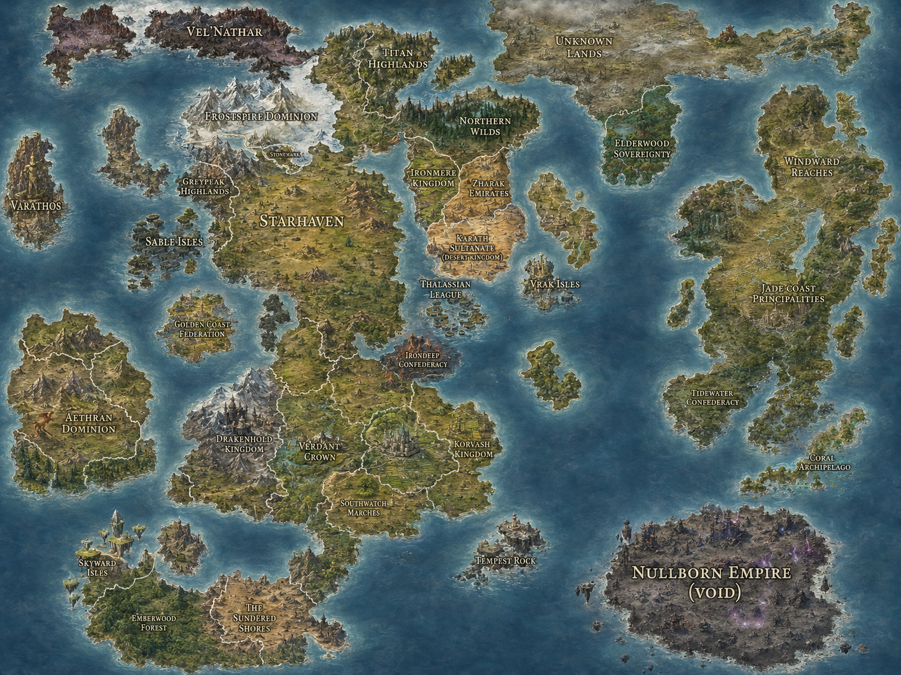

✦ Starhaven Main Narrative · Chapters I–VIII
Main Story
The Official Chronicle — From the Boy Who Ran Through Fire
The core narrative of the Starhaven saga. Each chapter is a full standalone HTML page. Click any card to read.
✦ Short Stories · Filler Arcs · Historical Records
Chronicles
The Starhaven Royal Athenaeum — Archivist Senna Ash
Short stories, filler arcs, historical records, and battle accounts that exist outside the main numbered chapters. Add new entries in the CHRONICLES data array in the script.
✦ Character Encyclopedia · Wiki Era
Characters
The Eleven · Commanders · Scholars · Allies
Every named character in the Starhaven saga. Click a card to expand. Edit the CHARACTERS array in the script to update any entry.
✦ Starhaven Military Registry · Wiki Era
Army Registry
Complete Force Inventory — All Armies, Garrisons, Allies & Contractors
Every standing army, pillar force, specialized unit, and allied commitment under Starhaven's banner.
✦ Starhaven Atlas · Locations & Territories
Atlas
Cities, Fortresses, Districts, Frontier Outposts
The known world of Starhaven — every documented location, from the capital at Starhold to the frontier Void-watch stations.
✦ Starhaven Cartography Office
World Map
Scroll to zoom · Drag to pan · Use buttons to reset

✦ The Kingdom in Detail
Compendium
The beasts in the dungeons, the coin in your purse, and the houses that hold the money
✦ The Royal Athenaeum · Year by Year
Timeline
Every dated chronicle and founding, in order
Built from the years already written in the chapters, the chronicles and the Atlas — nothing here is invented. Click any entry to open it.
✦ Ballads of Dren Solm · Ironvoice · Starhaven Musical Archive
Ballads
Every documented song — anthems, battle hymns, personal ballads
The complete musical archive. Click ▶ to play any track. The player bar at the bottom shows the currently playing piece.